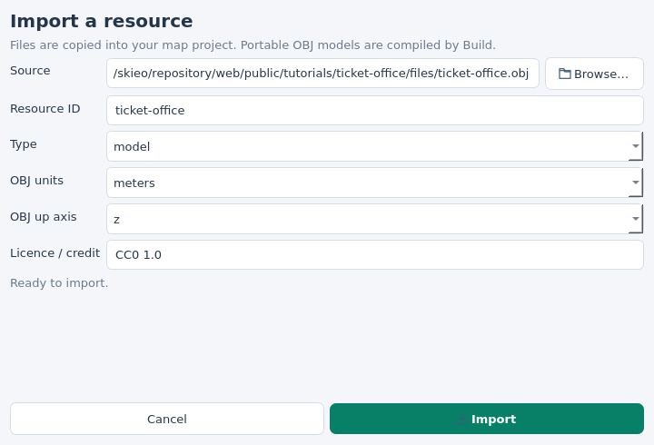
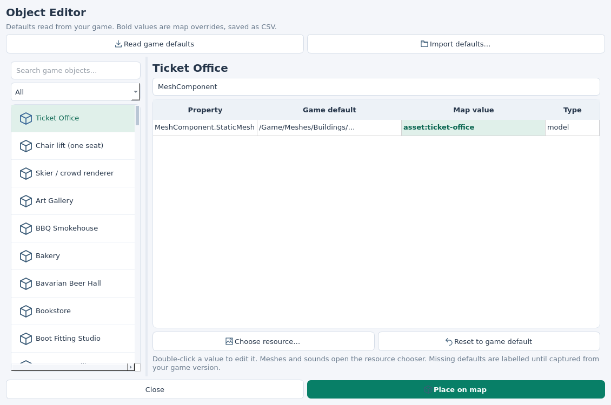
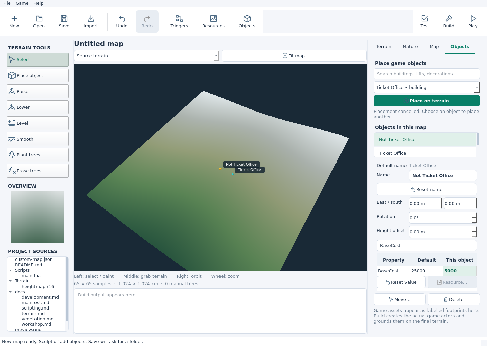
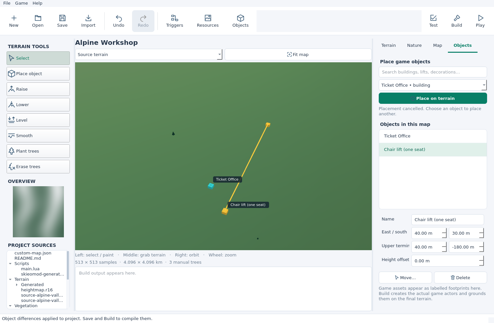

STEP 01
Open the source project
You need an existing map source folder containing custom-map.json. Create one with the editor map tutorial or the workshop’s New button.
Install or update the tools, close the game, then update its loader:
pipx install --force --index-url https://skieomod.emillon.fr/downloads/pypi/ skieo-custom-map
skieomod update
skieomod editor my-mountainReplace my-mountain with your project folder, or run skieomod editor and select it with Open. Use skieomod setup for your first game installation. The tools and the installed Custom Map loader both need version 1.15 or later.
Checkpoint: the workshop shows your source terrain in 3D and the toolbar contains Triggers, Resources and Objects.
STEP 02
Which kind of model do you have?
I have an OBJ model
Use a static OBJ, at most 50,000 triangles and 32 MiB. Put the origin at the ground contact point, choose metres or centimetres, and remember whether its up axis is Z or Y. Build triangulates faces automatically.
The portable replacement uses the original component’s first game material. It supports one material; MTL files and custom textures are not turned into Unreal materials. Images may be kept in the resource library separately.
Continue with Import the resource.
I have a cooked game asset
In Resources → Game reference…, enter a resource ID and its full Unreal object path, such as /Game/YourMod/Office.Office. Select that resource in step 4.
The asset must already be available in the game or a compatible installed mod. Add the owning mod’s ID and version to the map’s dependencies. A reference does not package or cook the external asset. Use a compatible StaticMesh for this field.
I want to try the sample
A small Ticket Office
A static cabin with a pitched roof and ticket windows, supplied in metres with Z up. This original tutorial mesh includes no game assets.
Import it with resource ID ticket-office, units meters and up axis z.
I have FBX, GLB or a Blender file instead
Export a static version to OBJ from your modelling application, with the correct scale and up axis, then follow the OBJ route. Animated models and custom Unreal materials need a compatible cooked asset workflow. Renaming the extension does not convert a model.
STEP 03
Import and inspect the resource
Click the toolbar’s Resources icon, then Import…. Use Browse… to select the OBJ, set its resource ID, choose model, units and up axis, and add its licence or credit. Click Import.


Select the model in the library to check it in 3D. Right drag rotates it, middle drag moves the view and the wheel zooms. Correct scale or orientation in your model/export if needed, then import a revised resource with a new ID.
The workshop copies the file into Resources/Files/ and keeps its options in Resources/assets.json. Close the Resource Editor to return to your map.
Checkpoint: the imported model appears upright in the 3D resource preview.
STEP 04
Choose the Ticket Office mesh
Click Objects in the toolbar and select Ticket Office in the left list. Search for MeshComponent, select MeshComponent.StaticMesh, then click Choose resource…. Select your imported resource and click Use resource.
The map value becomes asset:ticket-office for the sample and appears in bold. The change is already applied to the project. Click Place on map and left-click the terrain to add a Ticket Office. Press Escape to stop placing, then click Save.


Why does the default say “Not captured”?
Start any map with loader 1.15 or later, then use Read game defaults. The loader exports actual class defaults to Scripts/object-defaults.json in its mod directory. The editor also accepts that file through Import defaults… and stores a project copy. You can set a resource without a captured default; missing values are not guessed.
Reset to game default removes the override. The CSV records differences only. The same editor exposes game properties such as construction cost; enter only changes you want your map to apply.
Change one placed building
Version availability: the per-object property controls below require the prepared 1.16 release, which is awaiting publication. The current public download is 1.15.
Select its footprint or its entry in the workshop’s Objects in this map list. The properties panel shows Default name and Name. Enter Not Ticket Office to rename only that building. Its custom name becomes bold; Reset name makes it inherit the type’s name again.
Below, the Property / Default / This object table edits this instance’s game properties. Search for a property such as BaseCost, double-click its value, or select MeshComponent.StaticMesh and click Resource… to choose a model for only this office. Changes apply immediately and support Undo/Redo. Reset value removes the instance’s difference.


Should I use this panel or the toolbar’s Object Editor?
Use the selected-object panel for one building or lift already placed in your map. Use the toolbar’s Object Editor to set defaults for that entire type in this map, including objects built later in the game. Instance differences take priority over the map’s type defaults.
I changed DisplayName, but my building kept its old name
DisplayName in the Object Editor sets the type’s default name. A placed object with a custom Name keeps that name. Select it and click Reset name to inherit the default, or enter the intended custom name in its own Name field. Save, Build and Play the rebuilt map to see it in the game.


STEP 05
Build, then test a Ticket Office
Click Build, then Test. Build reads the resource library and object CSV, converts the OBJ to portable geometry and combines the result with your existing map script, graph/Lua triggers and compiled forest.
Click Play to start the editor’s own test instance, or reload that instance after rebuilding. Your ordinary game session stays separate. In this fresh map session, the Ticket Office you placed in the editor is created automatically on the final terrain. You can also place additional offices with the game’s building controls. Existing Ticket Offices in the loaded map and offices built later receive the override.
skieomod build my-mountain
skieomod test my-mountain
skieomod run my-mountainThe replacement remains attached to the original component, using its transform and material. Its original actor, construction behaviour and collision remain in use; the OBJ does not create a new collision shape. Keep the visual footprint close to the original building when collision matters. Overrides are restored when the map unloads.
The main terrain viewport previews relief, trees and labelled object footprints. The Resource Editor previews the OBJ; the actual placed building is inspected in the game.
Checkpoint: your map’s Ticket Office uses the selected model. Other maps and the game’s class defaults keep their normal values.
The source files behind the buttons
The workshop adds these project-relative build instructions to custom-map.json. You can author the same files manually and use the CLI; no separate converter is required.
"build": {
"resources": { "file": "Resources/assets.json" },
"objects": { "file": "Objects/overrides.csv" }
}Merge these keys into your existing build object, retaining heightmap, forest and vegetation settings.
{
"version": 1,
"assets": [{
"id": "ticket-office",
"kind": "model",
"file": "Resources/Files/ticket-office.obj",
"units": "meters",
"up_axis": "z",
"license": "CC0 1.0"
}]
}The UTF-8 CSV uses the columns object,field,type,value. Values are JSON literals, quoted as required by CSV:
object,field,type,value
/Game/Blueprints/Buildings/BP_TicketOffice.BP_TicketOffice_C,MeshComponent.StaticMesh,model,"""asset:ticket-office"""Build produces Scripts/skieomod-generated-authoring.lua and uses it as the packaged script entry. Your original script remains a source. Resource JSON, object CSV and OBJ authoring files stay in the project; runtime geometry is compiled into the package. Edit the sources and rebuild.
Common questions
The model is too small, huge, sideways or buried
Check the import’s units and up axis. Place the model origin at ground level and export the intended size. The game uses the replaced component’s transform; it does not automatically resize the replacement to fit the original mesh. Reimport a corrected model with a new ID, select it and rebuild.
The game still shows the old Ticket Office
Check skieomod update --check and upgrade the installed loader to 1.15 or later. Save the Object Editor changes, rebuild and relaunch the latest package in a new session on the correct map. The old package is not changed by editing sources alone. Look in the UE4SS game log for Object override errors if a game update changed the component.
The material does not look like my modelling application
The portable OBJ route reuses the original game material. Exported MTL files and custom image textures do not become Unreal materials. Use a compatible cooked StaticMesh reference for a model with authored game materials.
Can I replace a skier this way?
The skier/crowd entries use instanced game components. Choose a compatible cooked game mesh for those properties; the portable OBJ replacement is for individual StaticMesh components such as the Ticket Office.